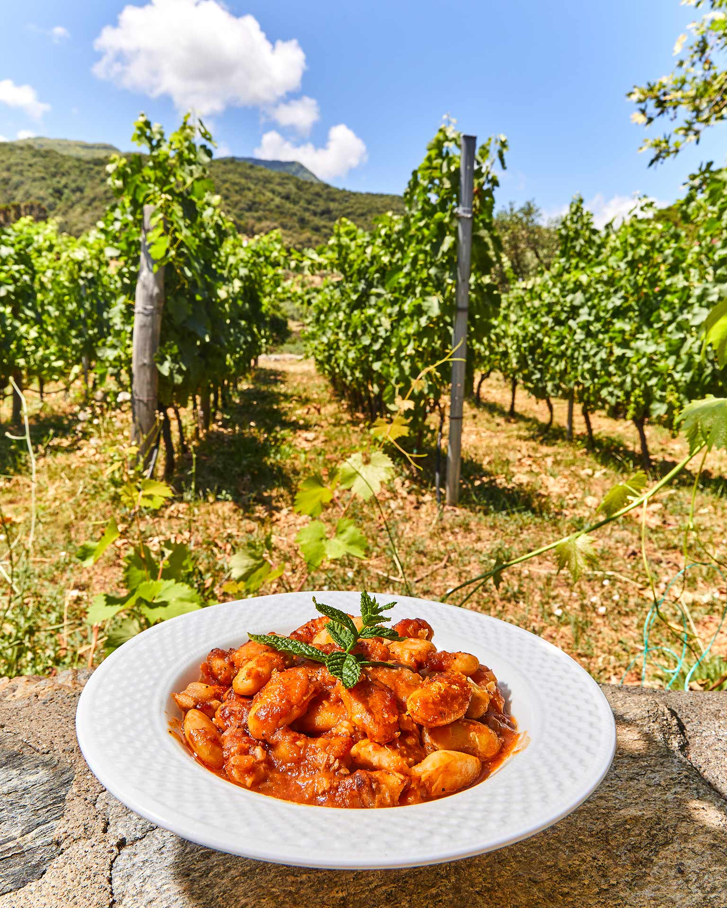

Ζελέ καρπούζι με άρωμα τριαντάφυλλο
- Σε κατσαρόλα, ζεσταίνουμε το νερό με τη ζάχαρη μέχρι να λιώσει η ζάχαρη. Αφήνουμε να κρυώσει.
- Ρίχνουμε το σιρόπι στον πολυκόφτη με το καρπούζι και το λικέρ τριαντάφυλλο και χτυπάμε για 1-2 λεπτά.
- Σουρώνουμε το μείγμα σε κατσαρόλα.
- Ζεσταίνουμε το μείγμα χωρίς να βράσει.
- Μουλιάζουμε τις ζελατίνες σε κρύο νερό για 3-4 λεπτά. Τις στίβουμε και τις ρίχνουμε στο μείγμα.
- Προσθέτουμε χυμό λεμονιού και ανακατεύουμε μέχρι να διαλυθούν οι ζελατίνες.
- Αδειάζουμε το μείγμα σε φόρμα και το αφήνουμε στο ψυγείο για 4 ώρες.
Γίγαντες στον φούρνο από το Άγιο Όρος

- Βράζουμε τα φασόλια σε άφθονο νερό για 45 λεπτά και τα στραγγίζουμε.
- Σοτάρουμε τα κρεμμύδια και τις πιπεριές με το μισό ελαιόλαδο για 10-15 λεπτά, μέχρι να μαλακώσουν.
- Αραιώνουμε τον ντοματοπελτέ σε 1 ποτήρι νερό και τον προσθέτουμε στα σοταρισμένα υλικά. Προσθέτουμε 1 λίτρο νερό, αλάτι, μπαχαρικά και μυρωδικά και αφήνουμε να πάρει βράση.
- Προθερμαίνουμε τον φούρνο στους 190°C.
- Στο ταψί, βάζουμε τα μισοβρασμένα φασόλια και ρίχνουμε τη σάλτσα με το υπόλοιπο ελαιόλαδο.
- Ανακατεύουμε καλά και προσέχουμε τα φασόλια να είναι σκεπασμένα με ζουμί. Αν χρειάζεται, προσθέτουμε ζεστό νερό.
- Ψήνουμε για 1 ώρα, μέχρι τα φασόλια να είναι στεγνά και ροδοκοκκινισμένα.
Κολοκυθοανθοί στον φούρνο με ρύζι και μυρωδικά
- Προθερμαίνουμε τον φούρνο στους 130°C.
- Σοτάρουμε το κρεμμύδι στο ελαιόλαδο για 10 λεπτά.
- Προσθέτουμε κολοκυθοανθούς, κολοκύθια και ρύζι. Σοτάρουμε για 6 λεπτά.
- Αποσύρουμε και προσθέτουμε λεμόνι, δυόσμο, μαϊντανό, αλάτι και πιπέρι.
- Γεμίζουμε τους υπόλοιπους κολοκυθοανθούς και τους τοποθετούμε σε ταψί.
- Περιχύνουμε με ζωμό και καλύπτουμε με αλουμινόχαρτο.
- Ψήνουμε για 2 ώρες. Αφήνουμε να σταθεί για 1 ώρα πριν σερβίρουμε.
Νηστίσιμη μερέντα
- Αλέθουμε τα φουντούκια στο μούλτι μέχρι να γίνουν σχεδόν πούδρα.
- Σε μεσαία φωτιά, βάζουμε όλα τα υλικά σε μια κατσαρόλα και ανακατεύουμε συνεχώς με έναν αυγοδάρτη για να διαλυθούν οι σβόλοι και να μην κολλήσει το μείγμα.
- Μόλις πάρει βράση και δέσει λίγο, αποσύρουμε την κατσαρόλα από τη φωτιά.
- Αδειάζουμε το μείγμα σε αποστειρωμένα βαζάκια.
- Αφήνουμε τη μερέντα να κρυώσει και την τοποθετούμε στο ψυγείο για μακροχρόνια συντήρηση.
κομπόστα μήλου με αρμπαρόριζα
- Σε φαρδιά κατσαρόλα, ρίχνουμε ζάχαρη και τη ζεσταίνουμε σε μέτρια φωτιά για 2-3 λεπτά, μέχρι να γίνει καραμέλα.
- Προσθέτουμε τις πιπερίτσες τσίλι και τα μήλα. Ανακατεύουμε για 1-2 λεπτά.
- Αποσύρουμε από τη φωτιά και προσθέτουμε το τζιν (προσεκτικά, γιατί θα κοχλάσει).
- Βράζουμε για 1 λεπτό, μέχρι να σχηματιστεί ένα ελαφρύ σιρόπι.
- Αποσύρουμε και ρίχνουμε τα φύλλα αρμπαρόριζας (ή δάφνης).
- Αδειάζουμε σε βάζο, αφήνουμε να κρυώσει και διατηρούμε στο ψυγείο για 3-5 μήνες.
 Spoon Theory
Spoon Theory